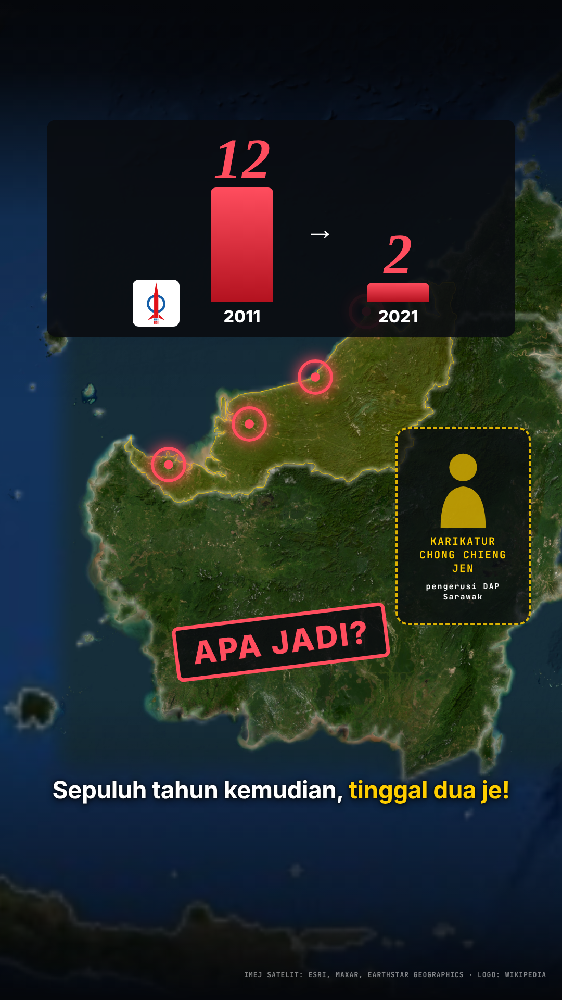
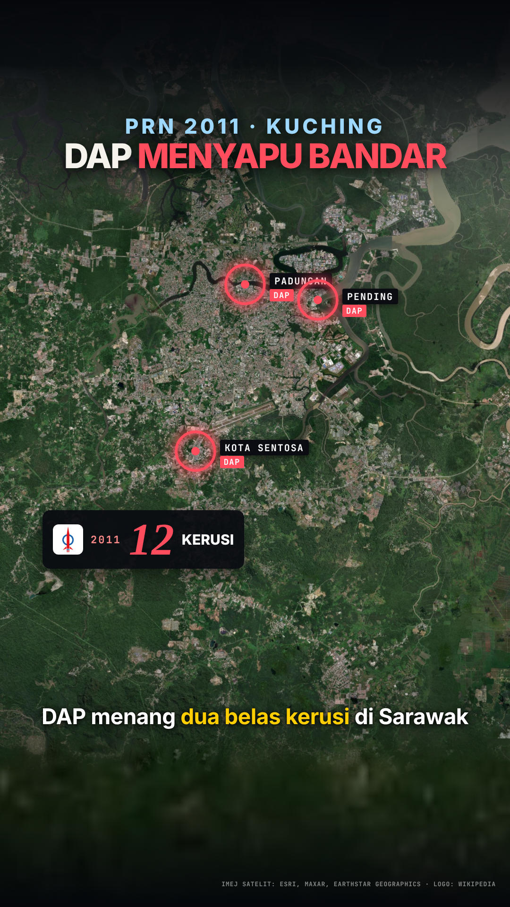
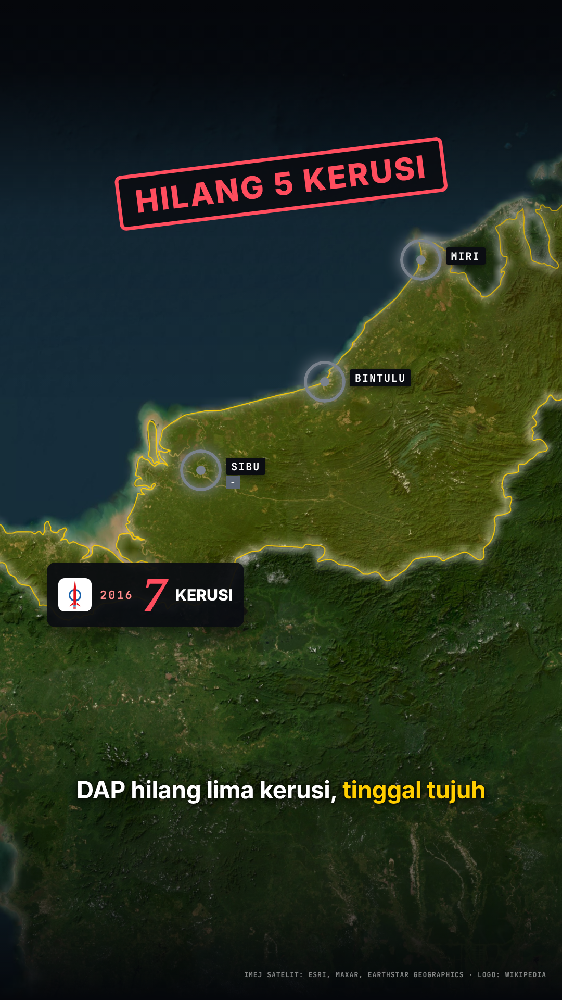
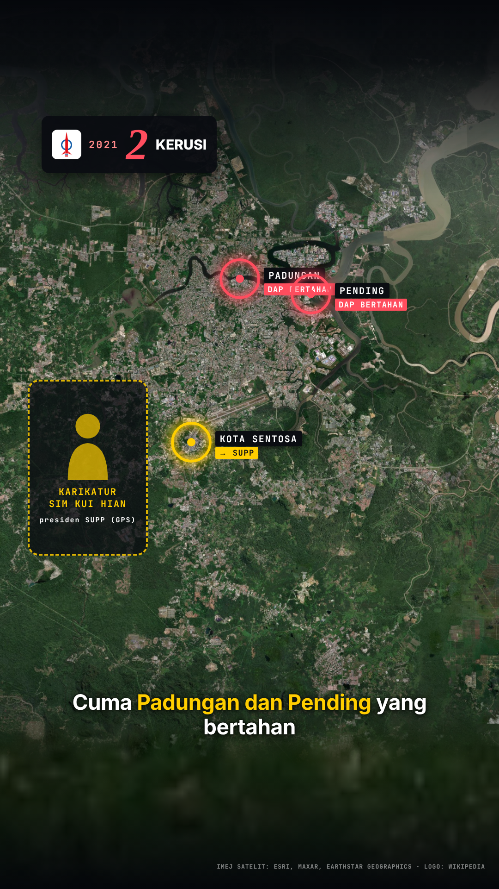
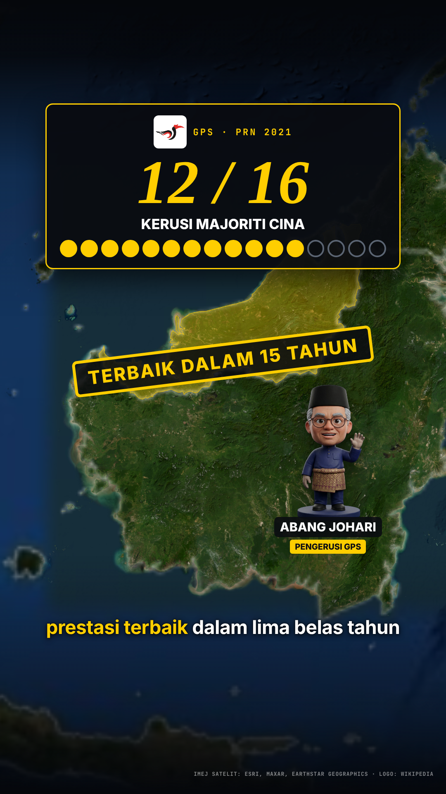
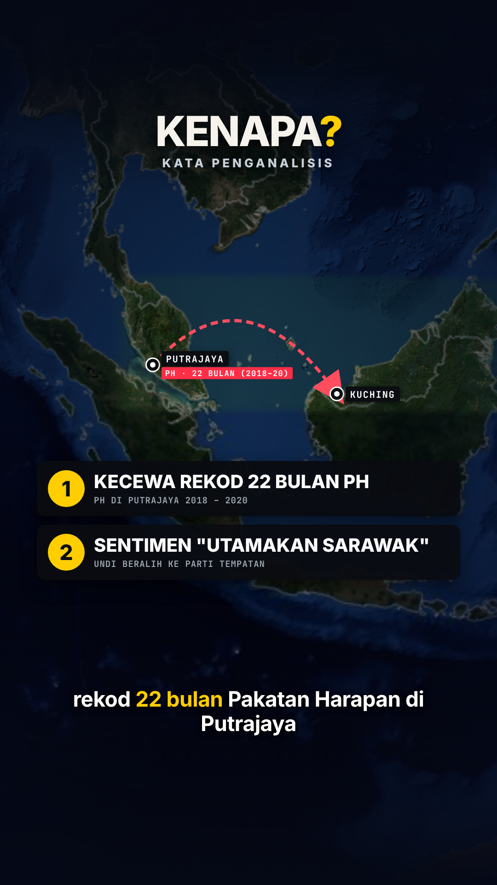

01 · 0:00
Hook + open loop
"Tahun 2011, DAP menang 12 kerusi di Sarawak. Rekod terbaik DAP di negeri tu. Sepuluh tahun kemudian, tinggal dua je! Apa jadi?"
Peta Sarawak, cincin merah berdenyut di Kuching, Sibu, Bintulu, Miri. Carta 12 → 2, cop APA JADI? Karikatur Chong Chieng Jen jatuh masuk.

02 · 0:07
2011: Kuching
"(sambungan hook)"
Zoom masuk ke Kuching (imej satelit tajam): cincin merah di Padungan, Pending, Kota Sentosa. Kad 2011 · 12 KERUSI.

03 · 0:10
2016: tinggal 7
"2016, DAP hilang lima kerusi, tinggal tujuh."
Terbang ke Sibu–Bintulu–Miri, cincin bertukar kelabu. Cop HILANG 5 KERUSI, kiraan 12 → 7.

04 · 0:14
2021: tinggal 2
"2021, hilang lima lagi. Cuma Padungan dan Pending yang bertahan. SUPP, parti dalam GPS, rampas balik kerusi-kerusi tu."
Balik zoom ke Kuching: Padungan & Pending kekal merah, Kota Sentosa bertukar kuning → SUPP. Karikatur Sim Kui Hian (SUPP) jatuh masuk.

05 · 0:22
12 / 16
"Malah GPS menang 12 daripada 16 kerusi majoriti Cina, prestasi terbaik dalam 15 tahun."
Sarawak menyala emas, kad 12 / 16 + logo GPS, karikatur Abang Johari melambai.

06 · 0:29
Kenapa? Putrajaya
"Kenapa? Penganalisis kata, pengundi kecewa dengan rekod 22 bulan PH di Putrajaya, dan sentimen Utamakan Sarawak makin kuat."
Terbang keluar ke Semenanjung: pin Putrajaya · PH 22 bulan, anak panah merah ke Kuching. Dua kad sebab (kata penganalisis).

07 · 0:39
Re-hook: seorang diri
"Tapi tunggu dulu! PRN kali ni, DAP bertanding seorang diri. PKR dan Amanah, rakan sendiri, tak turun langsung."
Flash. Balik ke Kuching. Logo PKR & Amanah dipangkah, Chong Chieng Jen berdiri seorang diri.

08 · 0:47
Ramalan
"Jadi, 12 Disember ni, DAP bangkit semula, atau terus tenggelam? Komen ramalan kau kat bawah!"
Dua kad BANGKIT vs TENGGELAM + KOMEN RAMALAN ↓.